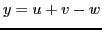

Next: Differentiation of the product Up: Rules for differentiating standard Previous: Differentiation of a variable Contents Index
Let . By the General Rule,
The derivative of the algebraic sum of a finite number of functions is equal to the same algebraic sum of their derivatives.